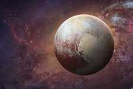

Our Destinations
A beautiful red planet.The average distance between Earth and Mars is about 225 million kilometers (140 million miles). However, this distance varies greatly due to the elliptical orbits of both planets around the Sun. At their closest approach (opposition), Earth and Mars can be just 54.6 million kilometers (33.9 million miles) apart. At their farthest (conjunction), they can be around 401 million kilometers (249 million miles) apart. These changes occur roughly every 26 months. This varying distance affects communication delays in space missions and the travel time for spacecraft, which typically takes 6 to 9 months to reach Mars from Earth.
Mars
The average distance between the Earth and the Moon is about 384,400 kilometers (approximately 238,855 miles). This distance can vary slightly because the Moon orbits Earth in an elliptical path, ranging from about 363,300 km (perigee) to 405,500 km (apogee). Light from the Moon takes roughly 1.28 seconds to reach Earth. This gap is vast enough to fit all the planets of the solar system in a line between them. Understanding this distance helps scientists in space missions, tidal predictions, and communication technology. Despite its size, this distance makes the Moon Earth's closest celestial neighbor and natural satellite.
Moon
The average distance between Earth and Jupiter is about 778 million kilometers (or 484 million miles). However, this distance constantly changes due to both planets orbiting the Sun at different speeds. At their closest approach (called opposition), they can be about 588 million kilometers apart, while at their farthest, the distance can stretch to over 968 million kilometers. Light takes around 35 to 52 minutes to travel between the two, depending on their positions. Despite being the largest planet in our solar system, Jupiter appears as a bright dot in our sky—reminding us how vast space truly is.
Jupiter

The average distance between Earth and Pluto is about 5.9 billion kilometers or 3.67 billion miles. However, this distance varies greatly due to the elliptical orbits of both planets. At its closest approach (called perihelion), Pluto can be about 4.28 billion km from Earth, and at its farthest (aphelion), it can reach over 7.5 billion km. Because of this vast distance, light from Pluto takes over 5.5 hours to reach Earth. A spacecraft like NASA’s New Horizons took nearly 9.5 years to reach Pluto. The sheer scale highlights just how massive our solar system is beyond the inner planets.
Pluto
The distance between Earth and Venus varies due to their elliptical orbits around the Sun. On average, the distance is about 41 million kilometers (25 million miles) when they are at their closest (called inferior conjunction). At their farthest, they can be around 261 million kilometers (162 million miles) apart. Venus is Earth's closest planetary neighbor and is often called Earth's "sister planet" because of its similar size and composition. Despite this, Venus has a thick, toxic atmosphere and extreme surface temperatures. Understanding this distance helps astronomers plan space missions and study planetary interactions in our solar system.
Venus
The average distance between Earth and Mercury is about 91 million kilometers (56 million miles). However, this distance varies significantly due to the elliptical orbits of both planets. At their closest approach (inferior conjunction), Mercury can be about 77 million kilometers (48 million miles) from Earth. At their farthest (superior conjunction), they can be over 222 million kilometers (138 million miles) apart. This vast distance affects communication delays in space missions and the travel time for spacecraft, which typically takes about 3 to 6 months to reach Mercury from Earth.
Mercury
The average distance between Earth and Neptune is about 4.3 billion kilometers (2.7 billion miles). However, this distance varies significantly due to the elliptical orbits of both planets. At their closest approach (opposition), Neptune can be about 4.3 billion kilometers from Earth, while at their farthest (conjunction), it can reach over 4.7 billion kilometers. Light takes about 4 hours to travel from Neptune to Earth, making it one of the most distant planets in our solar system. Spacecraft like Voyager 2 took about 12 years to reach Neptune, highlighting the vastness of our solar system.
Neptune

The average distance between Earth and Saturn is about 1.2 billion kilometers (746 million miles). However, this distance varies significantly due to the elliptical orbits of both planets. At their closest approach (opposition), Saturn can be about 1.2 billion kilometers from Earth, while at their farthest (conjunction), it can reach over 1.6 billion kilometers. Light takes about 1 hour and 10 minutes to travel from Saturn to Earth, making it one of the most distant planets in our solar system. Spacecraft like Cassini took about 7 years to reach Saturn, highlighting the vastness of our solar system.
Saturn

The average distance between Earth and Uranus is about 2.6 billion kilometers (1.6 billion miles). However, this distance varies significantly due to the elliptical orbits of both planets. At their closest approach (opposition), Uranus can be about 2.57 billion kilometers from Earth, while at their farthest (conjunction), it can reach over 3.2 billion kilometers. Light takes about 2 hours and 20 minutes to travel from Uranus to Earth, making it one of the most distant planets in our solar system. Spacecraft like Voyager 2 took about 8 years to reach Uranus, highlighting the vastness of our solar system.
Uranus
Titan, Saturn's largest moon, is about 1.2 billion kilometers (746 million miles) from Earth on average. This distance varies due to the elliptical orbits of both Saturn and Earth. At its closest approach (opposition), Titan can be about 1.2 billion kilometers from Earth, while at its farthest (conjunction), it can reach over 1.6 billion kilometers. Light takes about 1 hour and 10 minutes to travel from Titan to Earth, making it one of the most distant moons in our solar system. Spacecraft like Cassini took about 7 years to reach Titan, highlighting the vastness of our solar system.
Titan